-
기술분야
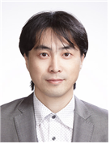
㈜바이오브레인
김기성
AI주요기술전문가
- 현) ㈜바이오브레인 대표
- 현 KAIST 바이오 및 뇌공학과 TA
- 현 HIRA(건강보험심사평가원) 자문위원
-
기술분야
한국전자통신연구원
김도형
시각지능
- 현) 한국전자통신연구원 책임연구원
- 한국정보화진흥원(NIA) 자문위원
-
기술분야
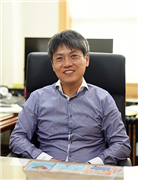
서울과학기술대학교
이승은
머신러닝
- 현) 서울과학기술대학교 전자IT미디어공학과 교수
- 호흡치료기 디바이스용 경량 SW-Soc 솔루션 개발
- 인공지능 뉴로모픽 프로세서 연구개발
-
기술분야
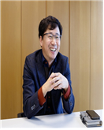
㈜케이티엔에프
이중연
기술
- 현) ㈜케이티엔에프 대표이사
- AI 주요기술을 중심으로 H/W 제품개발
- 컴퓨티 집약적 엣지 서비스 제공을 위한 서버 컴퓨팅 모듈 기술 개발
-
기술분야
서강대학교
박형민
청각지능
- 현) 서강대학교 전자공학과 교수
- 청각지능·시각지능·상황인지 분야에서 다수 논문 발표, 특허 출원 /등록
- 시청각 정보에 대한 멀티모달 딥러닝 기반의 강인한 연속음성인식 기술 개발
-
기술분야
창원대학교
차정원
기술
- 현) 창원대학교 컴퓨터공학과 교수
- GANs를 이용한 딥러닝용 학습데이터 자가 증식 기술 및 유효성 검증 기술개발
-
기술분야
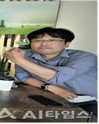
한국광기술원
김선만
청각지능
- 현) 한국광기술원 공간광정보연구센터 선임연구원
- 인공지능을 이용한 음향기반 위급상황 분석 비상벨 관제 시스템 개발
-
기술분야
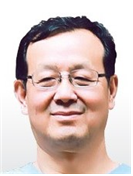
한양대학교
김재하
언어 및 청각지능
- 현) 한양대학교 산학협력중점교수
- 자동차 주행소음에 강인한 딥러닝 기반 화자인식 기술 개발 책임
- AI 스피커 음성비서를 위한 지능형 음성신호처리 기술개발
-
기술분야
상지대학교
고광만
머신러닝
- 현) 상지대학교 컴퓨터공학과 교수
- 광역산업 지역R&D 공동연구 책임자
-
기술분야
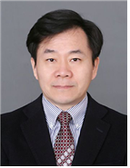
광주대학교
장휘일
기술
- 현)광주대학교 교수
- 한국사회적기업진흥원 소셜벤처 경연대회 심사위원
- 전전자교환기(pX)개발
-
기술분야
더이노베이터스
최광선
기술
- 현) ㈜더이노베이터스 대표이사
- 과학기술정보통신부 혁신성장 청년인재 기술 멘토 (인공지능, 빅데이터)
- 소셜 스트림 리즈닝을 통한 비매체 판촉활동(BTL)기회탐색 및 사후 평가 서비스 플랫폼 개발
-
기술분야
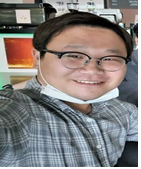
비에스소프트
장범석
머신러닝
- 현) ㈜비에스소프트 대표
- 인공지능을 이용한 음향기반 위급상황 분석 물리보안장치 관제 시스템 개발
- Tensorflow, Keras를 활용한 딥러닝 모델 구현
-
기술분야
한국과학기술정보연구원
이상민
AI모델링기획
- 현) 한국과학기술정보연구원 책임연구원
- IITP 주관 인공지능 기술청사진 기획위원
- 딥러닝 기반 도심지 교통혼잡 예측 및 신호제어 솔루션 시스템 개발
-
기술분야
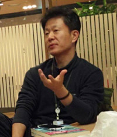
SK㈜ C&C
문용준
빅데이터
- 현) SK㈜ C&C 수석
-
기술분야
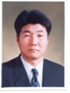
호남대산학협력단
정호채
기타기술/제품개발
- 현) 호남대산학협력단 산중교수 (전문위원)
- 중소벤처기업부 K - STARTUP 분야 시제품 제작
-
기술분야
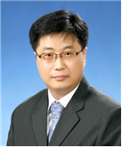
전남도립대학교
주재한
사업계획서 작성 및 발표
- 현) 전남도립대학교 산학중점교수
- 에너지밸리산학융합사업단 애로기술 자문
- 스마트제조혁신추진단 스마트공장구축사업 자문
-
기술분야
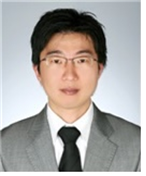
비앤엠경영연구소
최우석
기술
- 현)비앤엠경영연구소 대표
- 광주테크노파크 광통신제품 관련 기술멘토
- 고정밀, 고신뢰선 128ch FIBER ARRAY and FAN-OUT 개발